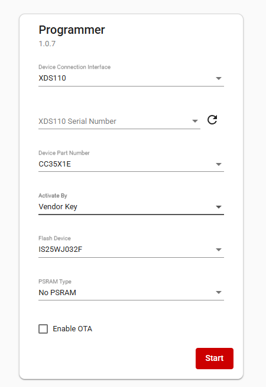
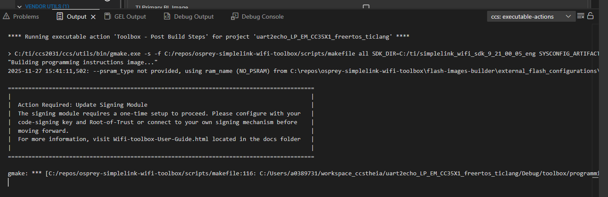
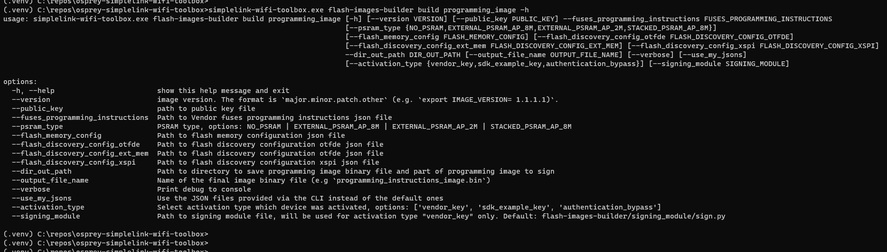
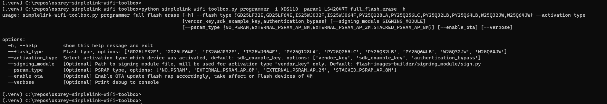
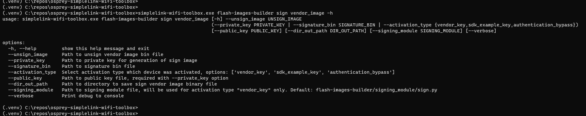
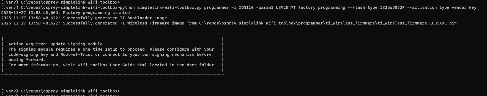

Device Activation & Fuses¶
Introduction¶
The CC35xx utilizes the Wi-Fi toolbox to assist in signing images and flashing them into the device, allowing for maximum security and prevention of malicious people from programming the device. To achieve this, customers must “activate” the device, or install a root of trust (and configuring other settings), which will be used to validate any images that are to be programmed to the device.
The customer also needs to be aware of certain settings that can only be configured during the activation stage of the device. These include Wi-Fi 6 usage, MAC address updates etc. These attributes cannot be changed after the activation stage is complete.
Fuses¶
There are additional settings referred to as fuses; these configurations cannot be changed after activation.
These are:
- Authentication Enable: Enable or Disabled.
- Flash Reset Type: In Band vs Physical Interrupt.
- Restrict INI: Gives users the opportunity to require authorization (key) to update RF and regulatory settings.
- App OTP: Reserve section for storing vendor defined data in the OTP.
- Country Code: Restricts the device to only accept a conf file with the corresponding country code.
- MAC Address Override: Gives users the opportunity to program the device with their own MAC address.
- Wi-Fi 6 Configuration: Gives users a one-time decision to either enable or disable Wi-Fi 6.
Future Programming¶
When programming the device in the future after activation, you may see and fill out a menu like this:

Please note the “Activate By” field. It must match what you set for the device during activation.
If using CCS, you must apply this change in SYSCFG as shown below:

If you haven’t updated the signing module when needed, you will see this:

Wi-Fi Toolbox CLI¶
These are some options when running the script, but please note that the activation_type default setting is “sdk_example_key” and the signing_module will only be used for activation type “vendor_key” and has a default path “flash-images-builder/signing_module/sign.py”, so you have to specify it if the script is a different name or somewhere else

For factory programming, based on “–activation_type” programmer will use the correct signing process, For “VENDOR_KEY’ user will be able provide specific path to signing module otherwise it will use signing_module from flash-images-builder/signing_module. Do not forget to specify the correct activation type.

For flash erase, based on “–activation_type” programmer will use the correct signing process, For “VENDOR_KEY’ user will be able provide specific path to signing module otherwise it will use signing_module from flash-images-builder/signing_module. This setting is used for redefining the flash size

For flash image builder, private_key and public_key are optional. Activation_type will be added and for “VENDOR_KEY’ user will be able provide specific path to signing module otherwise it will use signing_module from flash-images-builder/signing_module

If you haven’t updated the signing module when needed, you will see this:
